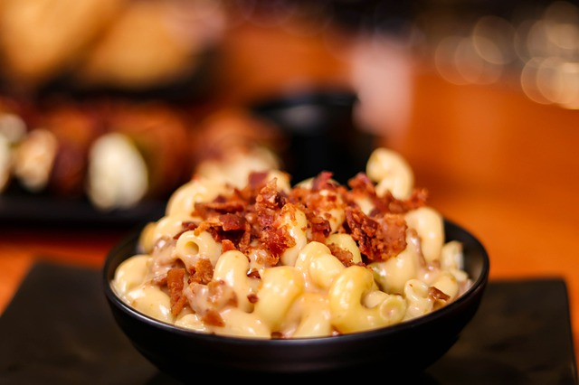

Geniko's EZ Chee-Z Macaroni

Do you think that making macaroni and cheese from scratch is too labor intensive? Do you think that you must make a huge pile of dishes? Not so! Put down that box of "instant" mac n' cheese - blue or otherwise - and make "EZ" macaroni and cheese in just about the same time with barely more effort.
This recipe is highly customizable and takes two pots plus some utensils. Let's get started!
Ingredients:
- 1 cup dry elbow (macaroni) pasta
- 1/4 cup flour
- 1/4 cup butter or lard/bacon fat
- 2 cups milk; warmed is best
- 1 cup (or to taste) shredded cheddar cheese (the sharper, the better, in my opinion)
- Ground black pepper (optional)
- Salt, if it tastes like it needs it
Steps:
For the pasta:
- Boil the pasta in four cups of water until it is to your desired tenderness.
- Drain and strain.
If your pasta happens to cook faster than your sauce, run the pasta under cool water to cease cooking.
For the cheese sauce, which you'll make while your pasta is boilng:
- Put a four-quart pot on medium heat, and add the butter. Make sure it reaches temperature, but doesn't burn (unless you like that sort of thing).
- While stirring, add the flour a bit at a time to make a smooth paste consistancy - not dough!
- Take the milk and slowly add it to the paste whilst stirring. It may take a moment, but the sauce should thicken up to the point where there will be a clean line if you run your finger across the stirring spoon.
- Turn off the heat (or turn to low).
- Add shredded cheese until it is melted and fully incorporated into the sauce.
- Add ground black pepper or other spices to your liking.
- Add your cooked pasta and stir.
- Finally, serve and enjoy!